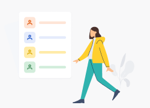

Participants
Select the groups that will participate in this survey Learn more
Inviting a randomized & representative sample

Add your participants Who would you like to receive feedback from?Select which groups you would like to invite to this survey, by editing the selection.